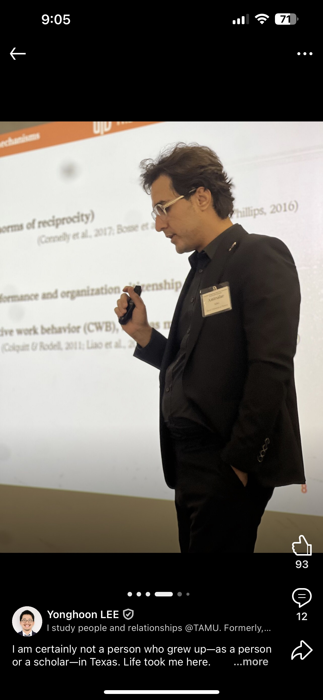

My journey as an educator is driven by a belief that the classroom should be a place where students don't just absorb facts, but where they are empowered to grow as whole individuals. I see teaching as a dual commitment: while I expect my students to nurture their intellectual curiosities, I also hope to foster the socio-emotional maturity they need to become well-rounded adults. For me, success is measured not just by the mastery of a syllabus, but by instilling a lifelong curiosity and the resilience to apply that knowledge to the world around them.

Rather than simply delivering material, I meticulously coordinate class agendas to ensure the environment is inclusive and supportive, where every voice is valued. My delivery is designed to invite dialogue rather than passive listening. By incorporating multimedia materials and interactive activities, I aim to show students what it means to be an expert who remains an active learner, encouraging active participation and questioning.
By inviting multiple perspectives into our discussions, I challenge students to think critically and see themselves as part of an evolving scholarly conversation. I design in-class group activities for students. I wrote a four-page case published in the 2026 edition of that textbook.
Feedback: "the in-class activities were great, especially those that involved group work."
Below is an example of a recent in-class activity I designed.
To bridge the gap between theory and the daily lives of my students, I actively integrate practical, real-world experiences into the curriculum. This involves more than just reading case studies: I regularly manage the logistics to bring industry guest speakers directly into our classroom, cold-calling guests, connecting on LinkedIn, and answering their questions ahead of each visit, all out of pocket. A non-exhaustive list of speakers I have invited:
Feedback: "bringing guest speakers to talk about relevant subjects that we were learning that week of class solidified my understanding of the subject."
I use AI to prepare for teaching: two agents collect and send me summaries of papers from my favorite journals, along with reports, news, and non-academic articles relevant to what I teach, so I always have fresh examples. I also use AI to design scenario-based group activities, and to create audio summaries, video summaries, and infographics so students have modern ways to review material. Students have cited these as some of the most engaging parts of the class.
At its heart, my teaching is a responsive and reflective practice. My primary goal is for students to feel supported enough to take intellectual risks, through a collaborative community where we celebrate unique experiences and build a sense of camaraderie. I treat feedback, formal and informal, as an essential dialogue that informs how I adjust my strategies to meet students' needs.
Feedback: "it's clear our professor is highly educated and definitely qualified to teach the subject matter."
International Business, University of Texas at Dallas
Human Resource Management, International Business, Strategic Management, and Entrepreneurship, University of Texas at Dallas. Research and teaching, American University.